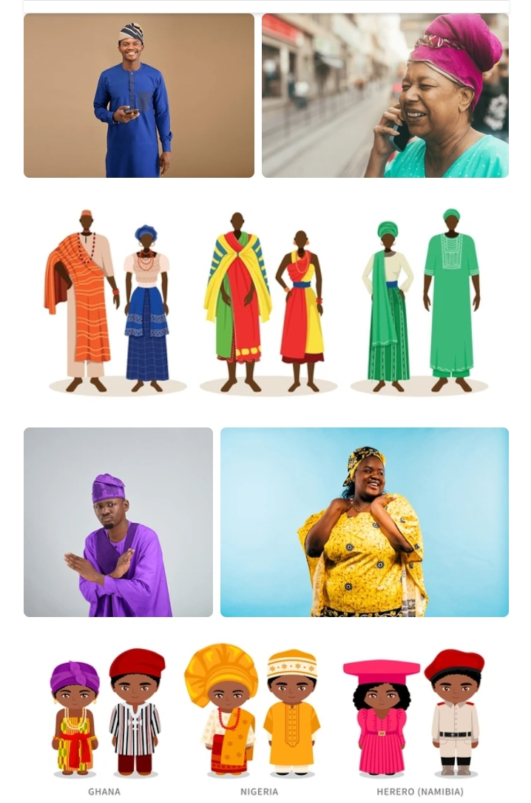

Fashion is a term used interchangeably to describe the creation of clothing, footwear, accessories, cosmetics, and jewellery of different cultural aesthetics and their mix and match into outfits that depict distinctive ways of dressing (styles and trends) as signifiers of social status, self-expression, and group belonging. As a multifaceted term, fashion describes an industry, designs, aesthetics, and trends.
The term 'fashion' originates from the Latin word 'Facere,' which means 'to make,' and describes the manufacturing, mixing, and wearing of outfits adorned with specific cultural aesthetics, patterns, motifs, shapes, and cuts, allowing people to showcase their group belongings, values, meanings, beliefs, and ways of life. Given the rise in mass production of commodities and clothing at lower prices and global reach, reducing fashion's environmental impact and improving sustainability has become an urgent issue among politicians, brands, and consumers.[1][2]Definitions
The French word mode, meaning "fashion", dates as far back as 1482, while the English word denoting something "in style" dates only to the 16th century. Other words exist related to concepts of style and appeal that precede mode. In the 12th and 13th century Old French the concept of elegance begins to appear in the context of aristocratic preferences to enhance beauty and display refinement, and cointerie, the idea of making oneself more attractive to others by style or artifice in grooming and dress, appears in a 13th-century poem by Guillaume de Lorris advising men that "handsome clothes and handsome accessories improve a man a great deal".[3]
History of Fashion
Alleged Western distinctiveness
Early Western travellers who visited India, Persia, Turkey, or China, would frequently remark on the absence of change in fashion in those countries. In 1609, the secretary of the Japanese shōgun bragged inaccurately to a Spanish visitor that Japanese clothing had not changed in over a thousand years.[19]: 312–313 However, these conceptions of non-Western clothing undergoing little, if any, evolution are generally held to be untrue; for instance, there is considerable evidence in Ming China of rapidly changing fashions in Chinese clothing.[20] In imperial China, clothing were not only an embodiment of freedom and comfort or used to cover the body or protect against the cold or used for decorative purposes; it was also regulated by strong sumptuary laws which was based on strict social hierarchy system and the ritual system of the Chinese society.[21]: 14–15 It was expected for people to be dressed accordingly to their gender, social status and occupation; the Chinese clothing system had cleared evolution and varied in appearance in each period of history.[21]: 14–15 However, ancient Chinese fashion, like in other cultures, was an indicator of the socioeconomic conditions of its population; for Confucian scholars, however, changing fashion was often associated with social disorder which was brought by rapid commercialization.[22]: 204 Clothing which experienced fast changing fashion in ancient China was recorded in ancient Chinese texts, where it was sometimes referred as shiyang, "contemporary-styles", and was associated with the concept of fuyao, "outrageous dress",[23]: 44 which typically holds a negative connotation. Similar changes in clothing can be seen in Japanese clothing between the Genroku period and the later centuries of the Edo period (1603–1867), during which a time clothing trends switched from flashy and expensive displays of wealth to subdued and subverted ones.

[26]...
Africa
Additionally, there is a long history of fashion in West Africa.[26] Cloth was used as a form of currency in trade with the Portuguese and Dutch as early as the 16th century,[26] and locally produced cloth and cheaper European imports were assembled into new styles to accommodate the growing elite class of West Africans and resident gold and slave traders.[26] There was an exceptionally strong tradition of weaving in the Oyo Empire, and the areas inhabited by the Igbo people.[26]African Fashion and styles
African fashion is a vibrant reflection of the continent’s culture, traditions, and creativity. It is known for its bold colors, unique patterns, and the use of traditional fabrics such as Ankara, Kente, and Adire. These fabrics are often designed with meaningful prints that represent cultural identity and heritage.Traditional African fabrics
Traditional African fabrics play an important role in African fashion and style. These fabrics are known for their bright colors, bold patterns, and cultural meanings. Popular examples include Ankara, Kente, and Adire, which are widely used to create clothing for both everyday wear and special occasions.
Fashion trends
- Social influence
- Marketing
- Political influences
- Technology influences

Connect with Divine
For collaborations and fashion research inquiries
© 2026 Divine Fashion Project | UNIUYO